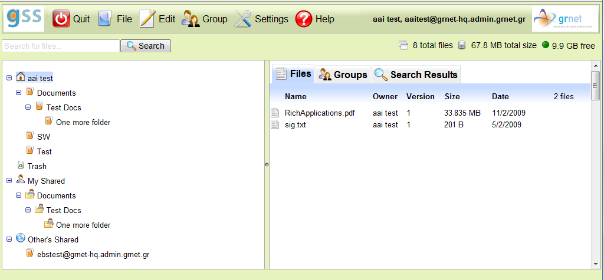

Η παρακάτω εικόνα δείχνει ένα παράδειγμα της οθόνης της υπηρεσίας GSS. Στο συγκεκριμένο παράδειγμα ο χρήστης έχει δημιουργήσει αρχεία και καταλόγους, ενώ έχει δώσει δικαιώματα πρόσβασης άλλων χρηστών σε καταλόγους και αρχεία του.

Στο πάνω τμήμα της οθόνης βρίσκεται το μενού επιλογών με τα εξής: